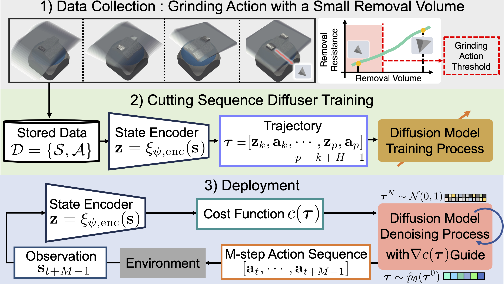

Cutting Sequence Diffuser: Sim-to-Real Transferable Planning
for Object Shaping by Grinding
Takumi Hachimine1, Jun Morimoto2,3, and Takamitsu Matsubara1
1: Nara Institute of Science and Technology (NAIST)
2: Kyoto University
3: Brain Information Communication Research Laboratory Group (BICR), Advanced Telecommunications Research Institute International (ATR)
Automating object shaping by grinding with a robot is a crucial industrial process that involves removing material with a rotating grinding belt.
This process generates removal resistance depending on such process conditions as material type, removal volume, and robot grinding posture, all of which complicate the analytical modeling of shape transitions.
Additionally, a data-driven approach based on real-world data is challenging due to high data collection costs and the irreversible nature of the process.
This paper proposes a Cutting Sequence Diffuser (CSD) for object shaping by grinding.
The CSD, which only requires simple simulation data for model learning, offers an efficient way to plan long-horizon action sequences transferable to the real world.
Our method designs a smooth action space with constrained small removal volumes to suppress the complexity of the shape transitions caused by removal resistance, thus reducing the reality gap in simulations.
Furthermore, by using a diffusion model to generate long-horizon action sequences, our approach reduces the planning time and allows for grinding the target shape while adhering to the constraints of a small removal volume per step.
Through evaluations in both simulations and real robot experiments, we confirmed that our CSD is effective for grinding to different materials and various target shapes in a short time.
Video
Overview
Trajectory generation for object shaping by grinding.
The proposed method (cutting sequence diffuser) enables sim-to-real transferable trajectory generation using a diffusion model by constraining the robot's action with a small removal volume, which reduces removal resistance.
Framework of Cutting Sequence Diffuser
A diffusion model is trained by collected data under grinding action with a small removal volume.
At the deployment, planned M-step action (cutting) sequences are executed based on the current observed shape.

Action space for grinding with a small removal volume
Top: Shape transition by cutting surface. Bottom: Transition examples of cutting surface.